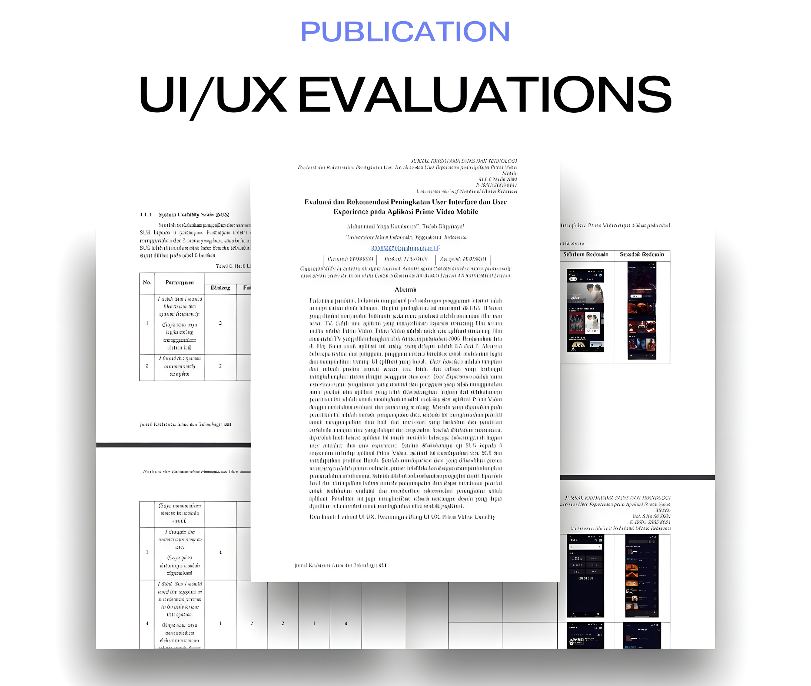

Latest Projects



UI/UX Evaluation and Recommendation
Publication | UI/UX Design | Figma | Microsoft Word
View ProjectHi, I'm Yoga.
A fresh graduate majoring in Informatics who has a great interest in the world of UI/UX Design
and Front End Developer. With a strong understanding of HTML, CSS, and JavaScript.
I have experience using Figma for UI/UX Design. I also have other skills in the
programming world and outside of it.
Publication | UI/UX Design | Figma | Microsoft Word
View Project